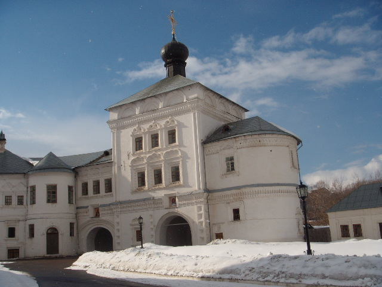

St. Tryphon of Vyatka at first built a wooden church of the Annunciation on the territory of the present monastery, and about 20 years later — another, the Assumption, also wooden, but much more majestic. Around the monastery, which for the first 100 years remained completely wooden, the settlement grew, and afterwards all the buildings were gradually rebuilt in stone buildings. The Trifonov Monastery in Kirov is the oldest in the entire Vyatka land, and it has great spiritual significance for Orthodox believers. The Velikoretsky procession departs from here.
St. Tryphon of Vyatka at first built a wooden church of the Annunciation on the territory of the present monastery, and about 20 years later — another, the Assumption, also wooden, but much more majestic. Around the monastery, which for the first 100 years remained completely wooden, the settlement grew, and afterwards all the buildings were gradually rebuilt in stone buildings. The Trifonov Monastery in Kirov is the oldest in the entire Vyatka land, and it has great spiritual significance for Orthodox believers. The Velikoretsky procession departs from here.In the following centuries, the monastery received a lot of land with peasant villages by royal decrees and eventually became very secured and prosperous. But in 1918, the monastery was closed, and the monks were shot. The Assumption Cathedral, however, continued to operate after that for another 10 years. In 1988, the issue of transferring the monastery to the Local History Museum or the diocese was resolved thanks to the mass collection of signatures, and in 1991 the monastery was opened, and the Assumption Cathedral was re-consecrated.
 The Assumption Cathedral of the Trifonov Monastery is an almost standard church building of the 17th century. This is a large temple with six domes, a bit like the Assumption Cathedral in the Moscow Kremlin. The building is strictly symmetrical and rather restrained in its exterior, as dictated by the canons of Russian Orthodox architecture. High and powerful drums are crowned with black onion domes, and under the roof you can see a ribbon of zakomar forming semicircular arches. While building the cathedral, as was expected at that time, it was taken into account what kind of view it would have from a distance, in the perspective. Therefore, it looked great from the Kikimora Mountain, from the old market square, and from the left bank of the ravine. Unfortunately, today these perspectives are disrupted.
In total, the monastery complex includes a little less than 20 buildings. The most significant of them are four churches: the Assumption, the Annunciation, the Three Saints and the St. Nicholas Over-the-Gate. The earliest of them in their current form was the Cathedral of the Assumption of the Virgin, built in the late 17th century. Almost immediately behind it appeared the church over-the-gate, and the other two were rebuilt in stone in the first half of the 18th century.
Other notable monastic buildings are the bell tower, originally built in the 18th century, then destroyed and restored again only in the 1990s; the four corner towers of the 18th century (two of them also restored in the late 20th century) and the chapel of St. Tryphon.